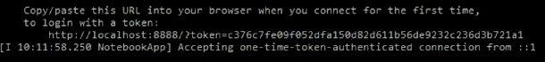
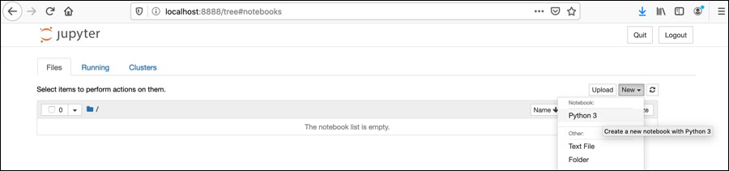
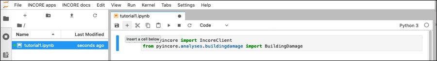
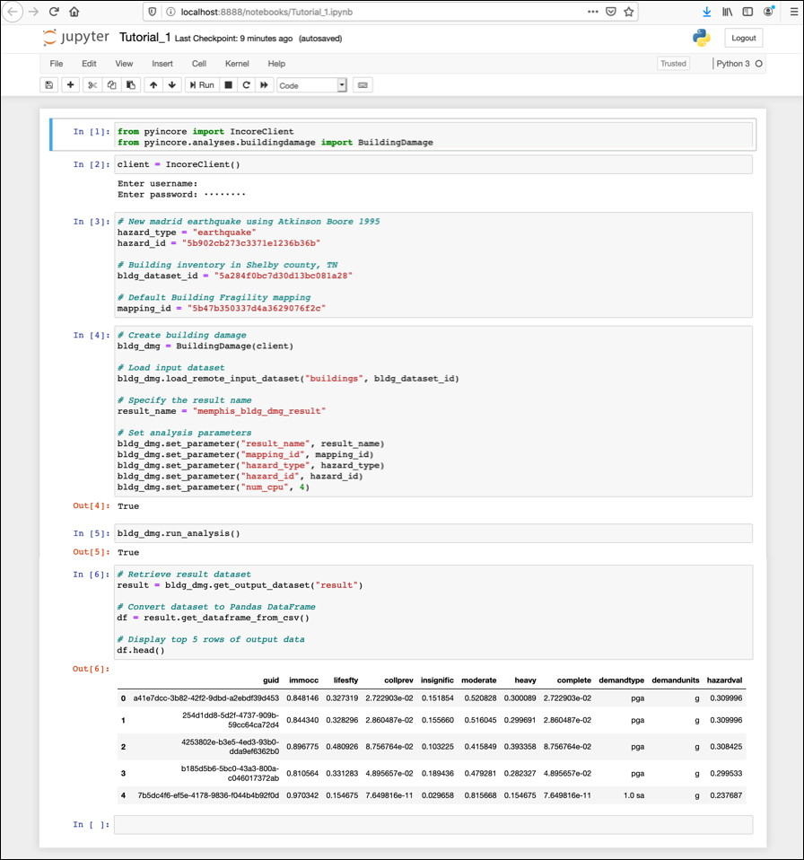
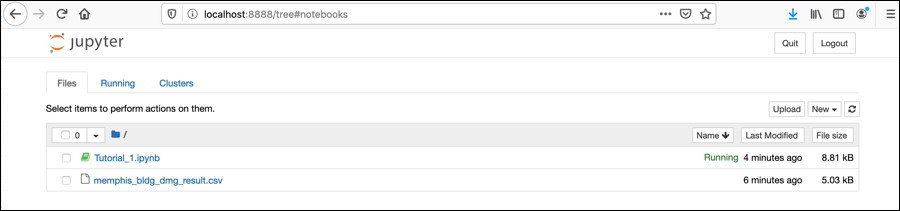

Getting Started#
This page is an overview of the IN-CORE and pyIncore documentation and related resources.
IN-CORE is a platform that enables quantitative comparisons of alternative resilience strategies. On the platform, data from the community can be seamlessly integrated which allows users to optimize community disaster resilience planning and post-disaster recovery strategies intelligently using physics-based models of inter-dependent physical systems combined with socio-economic systems.
pyIncore is a Python project and module to analyze and visualize various hazard (earthquake, tornado, hurricane etc.) scenarios. Python framework accesses underlying data and interacts with them through remote services and facilitates moving and synthesizing results, it can also be used to develop scientific analysis and algorithm.
Introduction to IN-CORE platform#
On the IN-CORE platform, users can run analyses that model the impact of natural hazards and community resilience and recovery. The platform consists of IN-CORE Lab, pyIncore, Web tools, and Web services. Resources such as Inventory datasets, Fragilities, Hazard files etc. provided by the research community are stored on NCSA’s IN-CORE servers, and they can be seamlessly integrated to allow users to optimize community disaster resilience planning and post-disaster recovery strategies.
In this Tutorial, we will create a Building damage script for a specific testbed by calling pyIncore’s core analysis module BuildingDamage. We will be running the Notebook interactively, first in NCSA’s IN-CORE Lab and then on your local computer.
A user must have an IN-CORE account recognized by the IN-CORE service. This account gives you access to all of the public data on the system and allows you to create data that is only accessible by you. See IN-CORE Account section for creating one.
Using pyIncore locally#
In this section we will create and run our first analysis using Jupyter Notebook and pyIncore library, both run locally on your computer. We will re-create Building Damage analysis. The result will be a comma-delimited (csv) text file with Building inventory and Damage states for each individual building.
Apart from your IN-CORE Account you need:
Python virtual environment called Miniconda
Jupyter Notebook and
pyIncore library
For this Getting started example we use small Python environment manager Miniconda which includes just Python, conda, and a small number of other packages. We will install Jupyter Notebook separately. For additional installation details see prerequisites page.
Install pyIncore package - quick reference#
If you already have Miniconda (or Anaconda) installed update conda, an interface for managing installations and virtual
environments shared by both Miniconda and Anaconda, using conda update conda command and continue with step 3.
If you don’t have Miniconda installed, do the following steps.
Download the latest Miniconda3 installer from the Miniconda web page.
From the Terminal (Mac/Linux) or Command Prompt (Windows) add conda-forge package repository/channel to your environment:
conda config --add channels conda-forge
Create the python environment (for this example we choose
pyincoreEnv):conda create -n pyincoreEnv python=3.8
Activate the environment:
conda activate pyincoreEnv
To install pyIncore, navigate to the directory you want to use for running Jupyter Notebooks and run the following command:
conda install -c in-core pyincore
A user can also install pyIncore-viz module for which pyIncore installs as a dependency:
conda install -c in-core pyincore-viz
If the installed pyincore or pyincore-viz version is not the latest or lower than the desired one, specify the version number in installation command.
conda install -c in-core pyincore=1.5.0 (or your version of choice)
Version information for pyincore and pyincore-viz can be found in
https://anaconda.org/IN-CORE/pyincore
https://anaconda.org/IN-CORE/pyincore-viz
Install Jupyter Notebook. Jupyter Notebook is already installed with Anaconda distribution; it has to be installed separately in your virtual environment on Miniconda:
conda install jupyter
Running Jupyter Notebook#
Start local Jupyter Notebook by running the following command in the terminal or command prompt, from your Project folder:
jupyter notebook
A message The Jupyter Notebook is running appears in the terminal/prompt and you should see the notebook open in your browser. If a web browser doesn’t open automatically, you can copy/paste a token into browser’s navigation bar.

Create a new Jupyter Notebook, name it Tutorial_1.ipynb

In the Notebook’s upper cell type, or copy and paste following code:
from pyincore import IncoreClient, FragilityService, MappingSet from pyincore.analyses.buildingdamage import BuildingDamage
With these two lines you just get to two classes from the pyIncore module.
You can already run the Notebook by clicking
Run the selected cellsarrow button. If pyIncore imports correctly a second, empty cell appears. Otherwise ImportError error message is shown.
Connect to IN-CORE services by typing in the empty cell (or insert a new one by clicking the
+button first):.
client = IncoreClient()
Prompts
Enter usernameandEnter passwordappear. Enter your account credentials for service authentication.
In the next cell we are going to select Hazard, Building inventory and Fragility curves for the buildings.
# New madrid earthquake using Atkinson Boore 1995 hazard_type = "earthquake" hazard_id = "5b902cb273c3371e1236b36b" # Building inventory in Shelby county, TN bldg_dataset_id = "5a284f0bc7d30d13bc081a28" # Default Building Fragility mapping mapping_id = "5b47b350337d4a3629076f2c"
For this Tutorial we chose a New madrid earthquake using Atkinson Boore 1995 as hazard, Building inventory in Shelby county, TN and Default Building Fragility mapping
The files are referenced by their ID numbers and they are being accessed from IN-CORE services; Hazard service, Data service, and DFR3 (Damage, Functionality, Repair, Restoration, Recovery) service located on the IN-CORE servers. Users can see the files in IN-CORE Web Tools or in IN-CORE Lab under
INCORE Apps menu.
Next, create an instance of Building damage object specific to this Tutorial in your Notebook. We need to specify the datasets, fragility mapping set and parameters necessary for running the analysis.
# Create building damage bldg_dmg = BuildingDamage(client) # Load input dataset bldg_dmg.load_remote_input_dataset("buildings", bldg_dataset_id) # Load fragility mapping fragility_service = FragilityService(client) mapping_set = MappingSet(fragility_service.get_mapping(mapping_id)) bldg_dmg.set_input_dataset("dfr3_mapping_set", mapping_set) # Specify the result name result_name = "memphis_bldg_dmg_result" # Set analysis parameters bldg_dmg.set_parameter("result_name", result_name) bldg_dmg.set_parameter("hazard_type", hazard_type) bldg_dmg.set_parameter("hazard_id", hazard_id) bldg_dmg.set_parameter("num_cpu", 4)
:::{note} The
load_remote_input_datasetandset_parameterare functions of pyIncore’s module. The parameter Number of central processing units (num_cpu) is used for paralel computations. :::Call run function.
bldg_dmg.run_analysis()

Save your Tutorial notebook by clicking
Savebutton in the top bar. Your web page now shows multiple cells of code.You are not actually running a notebook yet. Running a cell means that you will execute the cells’ content. To execute cells one by one you can just select the first cell and click the Run button/command at the top, or from the menu
Run > Run All Cells command.A memphis_bldg_dmg_result.csv file will appear after a short time in the file tab.

:::{note} There is little indication that analysis is running except by either looking at the Notebook file and seeing the [*] for the
cell where that block of code is being executed. You might also get warning Matplotlib is building the font cache using fc-list. This may take a moment. :::You can view the resulting datataset directly by double clicking the csv file in the left panel or by converting csv to Pandas DataFrame in the Notebook itself:
# Retrieve result dataset result = bldg_dmg.get_output_dataset("ds_result") # Convert dataset to Pandas DataFrame df = result.get_dataframe_from_csv() # Display top 5 rows of output data df.head()
Useful links#
Miniconda: Installing Miniconda
Anaconda or Miniconda? Conda documentation and differences.
Anaconda: Installing on Windows, Installing on macOS and Installing on Linux, and Frequently asked questions
A Beginner’s Guide to installing Jupyter Notebook using Anaconda distribution. Opening a Jupyter Notebook on Windows.
For details on running and manipulating
ipynbfiles refer to Jupyter documentation. If you have problems running Notebooks, check our WIKI questions page or contact us at incore-dev@lists.illinois.edu.IN-CORE Lab extends Jupyter Lab. See Jupyter Lab and blog for more information.
IN-CORE’s Frequently Asked Questions (FAQ) and WIKI Questions for detail information.
The Building analysis Jupyter Notebook is also available at IN-CORE project on GitHub.